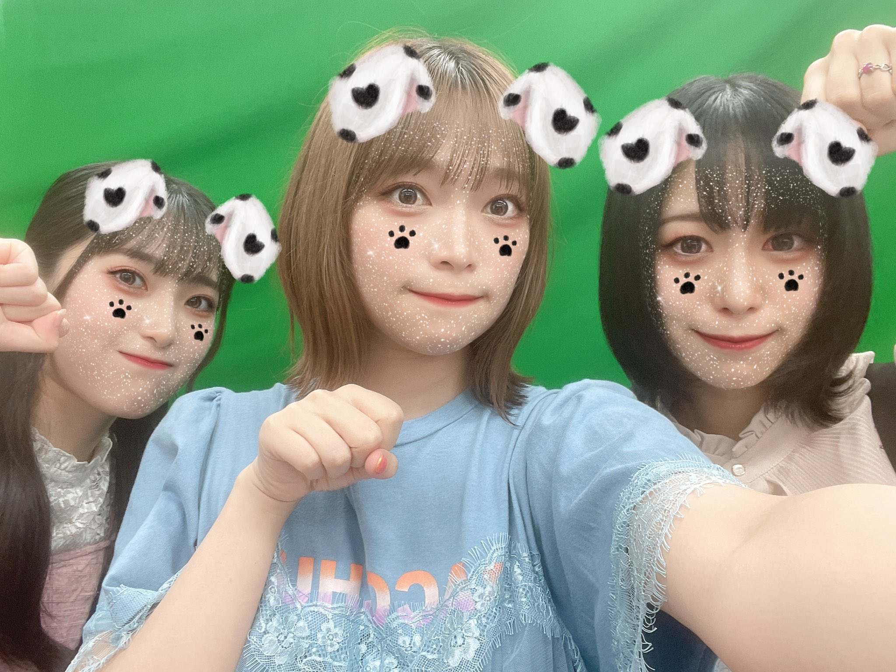

Koyamakai
un grupo de expertas en marketing
Anuncio de nuevo evento
31 de febrero de 2023
Momoyo Koyama, Moe Tatsuzawa y Seina Kato se
preparan para festejar el primer evento del
"Koyamakai", donde se esperan grandes invitados,
venta de mercancía y competiciones de Karaoke.
el evento será llevado a cabo en el Yokohama...ver más